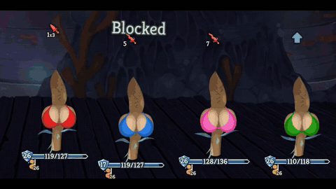
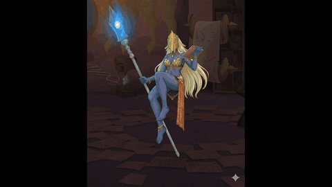

Slay the Spire 2 review: co-op deckbuilding with AI-redrawn enemies

Slay the Spire 2 is the roguelike deckbuilder sequel from Mega Crit. You build a deck as you climb the Spire, picking up cards, relics and potions along the way, and no two climbs go the same. The big new thing is co-op: up to 4 players can climb together, with multiplayer-only cards and team synergies.
We played co-op with one rule: every enemy we fought got redrawn by Grok as uncomfortably sexy before we killed it. Grok put bikinis on most of the monsters and refused the rest. It hit an ethical dilemma over one enemy, ran out of messages on another, and the bony hand just got a bikini. In between we argued about whether Wishbone is the Target mascot and got Rabbit to hit the meme damage number.

Even the final boss got a bikini before we beat it. Then we found out we'd been playing on Ascension 1, which is basically baby mode.

It's $24.99 on Steam. The full run is below.